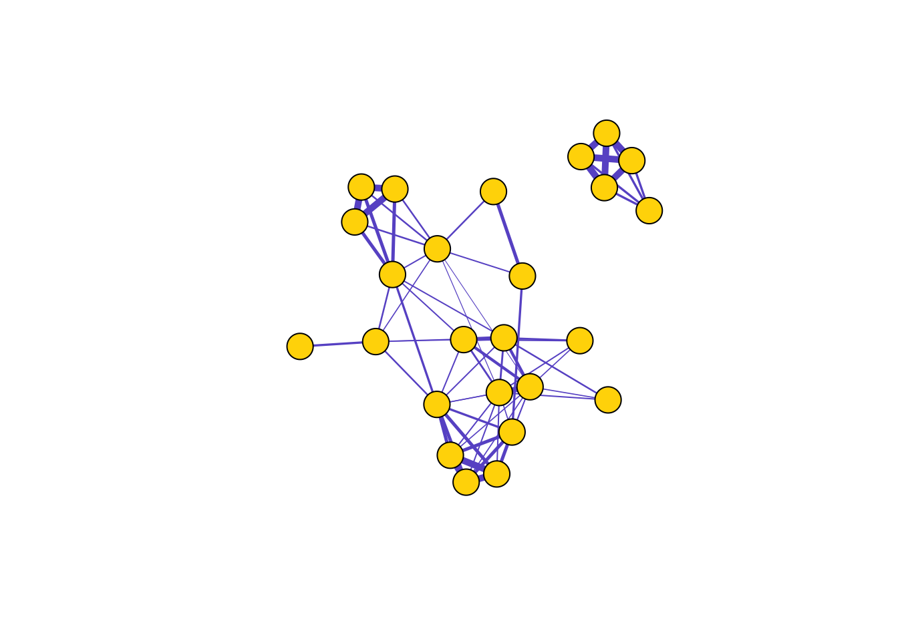
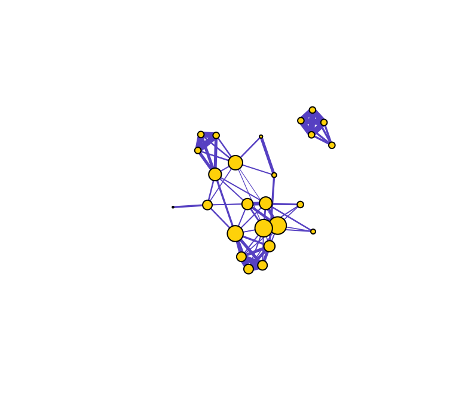

- Measuring Networks
Dai Shizuka
7/11/2018
Now that we have a handle on visualizing a network and the basics of relevant types of networks, we will go about the task of quantitatively describing its characteristics. There are multiple levels at which we can measure and describe networks:
- Node-level
- Subcomponent-level
- Networklevel
Let’s start by loading the sample social network we introduced in section 4.1. Here, we are going to be using both the igraph and asnipe packages.
library(igraph)
library(asnipe)
assoc=as.matrix(read.csv("https://dshizuka.github.io/networkanalysis/SampleData/Sample_association.csv", header=T, row.names=1))
gbi=t(assoc)
mat=get_network(t(assoc), association_index="SRI")
g=graph_from_adjacency_matrix(mat, "undirected", weighted=T) #create a graph object# plot the network
set.seed(10)
l=layout_with_fr(g)
plot(g, layout=l, vertex.label="", vertex.color="gold", edge.color="slateblue", edge.width=E(g)$weight*5)
5.1 Centrality Measures (i.e., node-level measures)
Centrality is a general term that relates to measures of a node’s position in the network. There are many such centrality measures, and it can be a daunting task to wade through all of the different ways to measure a node’s importance in the network. Here, we will introduce just a few examples.
5.1.1 Degree and Strength
Let’s start with the most straight-forward centrality metric: degree centrality. Degree centrality is simply the number of edges connected to a given node. In a social network, this might mean the number of friends an individual has. We can calculate degree centrality with a simple function:
degree(g)## 23820 23726 23831 23763 23772 23770 23771 23777 23774 23860 23779 23773
## 4 4 4 4 6 8 10 7 8 9 4 11
## 23862 23857 23871 23853 23732 23734 23756 23759 23768 23758 23781 23815
## 11 2 3 4 3 1 6 6 6 7 4 4
## 23809
## 4Let’s visualize what this means by varying the node sizes proportional to degree centrality.
set.seed(10)
de=degree(g)
plot(g, vertex.label="", vertex.color="gold", edge.color="slateblue", vertex.size=de*2, edge.width=E(g)$weight*5)
In weighted networks, we can also node strength, which is the sum of the weights of edges connected to the node. Let’s calculate node strength and plot the node sizes as proportional to these values.
set.seed(10)
st=strength(g)
plot(g, vertex.label="", vertex.color="gold", edge.color="slateblue", edge.width=E(g)$weight*5, vertex.size=st*5)
Compare the relative node sizes when plotting by degree vs. strength. What differences do you notice?
5.1.2 Betweenness
Let’s now do the same for betweenness centrality, which is defined as the number of geodesic paths (shortest paths) that go through a given node. Nodes with high betweenness might be influential in a network if, for example, they capture the most amount of information flowing through the network because the information tends to flow through them. Here, we use the normalized version of betweenness.
be=betweenness(g, normalized=T)
plot(g, vertex.label="", vertex.color="gold", edge.color="slateblue", vertex.size=be*50, edge.width=E(g)$weight*5)
You can see that there are three nodes that have qualitatively higher betweenness values than all other nodes in the network. One way to interpret this is that these are nodes that tend to act as “bridges” between different clusters of nodes in the network (but of course, this is only sample data).
What does this say about the importance of these nodes? Well, that depends on the network and the questions–in particular how you might quantify ‘importance’ in your network.
Here’s a short list of some commonly-used centrality measures:
| Centrality Measure | Function | Description |
|---|---|---|
| degree | degree() |
Number of edges connected to node |
| strength | graph.strength() |
Sum of edge weights connected to a node (aka weighted degree) |
| betweenness | betweenness() |
Number of geodesic paths that go through a given node |
| closeness | closeness() |
Number of steps required to access every other node from a given node |
| eigenvector centrality | eigen_centrality() |
Values of the first eigenvector of the graph adjacency matrix. The values are high for vertices that are connected to many other vertices that are, in turn, connected many others, etc. |
| ————– | ———- | ———————————– |